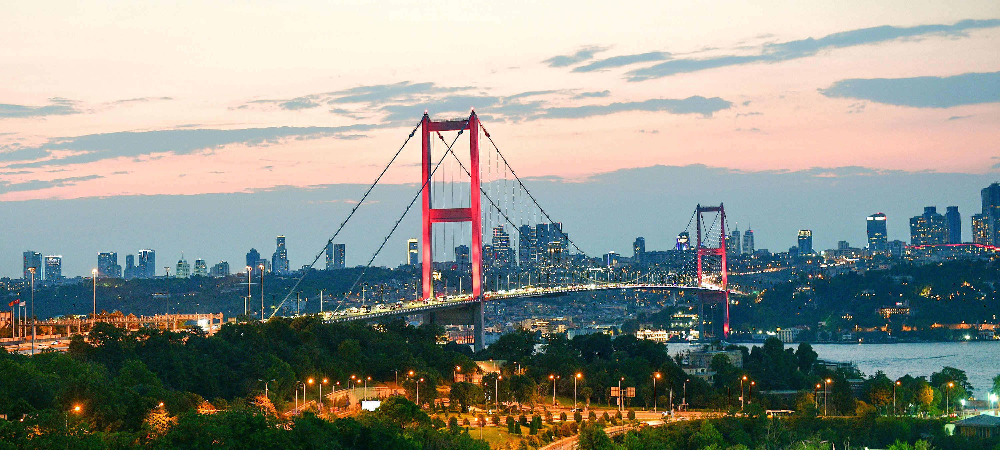
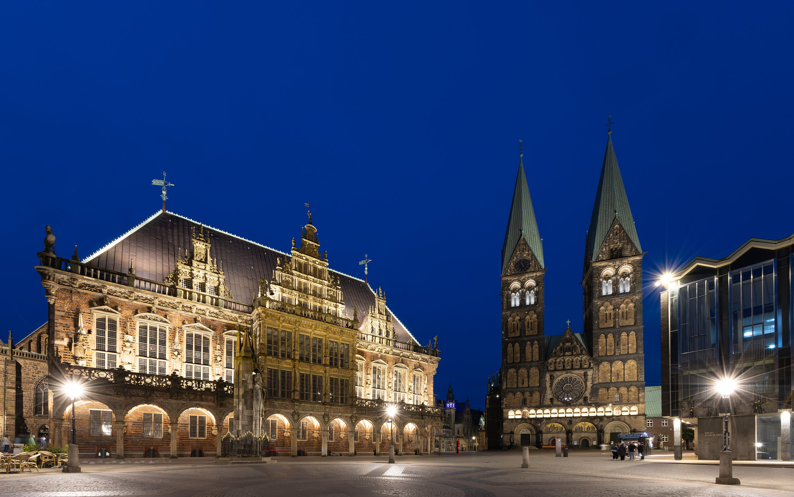
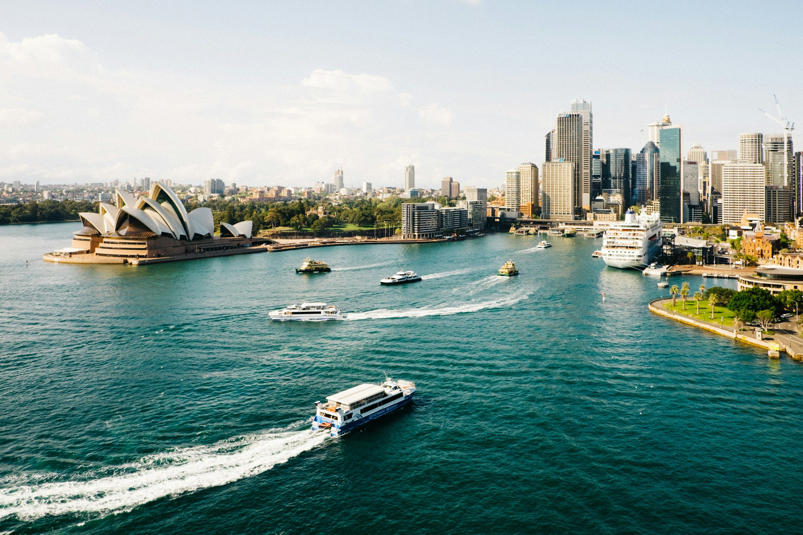

Software Engineer

Ferries crossing the Bosphorus, cats on every corner and a first keyboard that turned tinkering into a calling. Istanbul taught me to live between worlds — and to build bridges between them.
Every journey needs a harbour to leave from. Mine was loud, golden and fifteen million people strong.

Bremen is a city that rewards patience: brick gothic, drizzle and the Weser moving slowly toward the sea. Here I learned to build software at scale — platforms carrying ticket sales for theatres and concert halls across Europe, where every line of code had an audience waiting.
Some cities teach you to dream. This one taught me to ship.

In 2026 the journey crosses the equator. Sydney is where the story turns from past tense to present: new team, new product, the Pacific instead of the North Sea and everything still to build.
The best chapters are the ones you haven't finished writing.